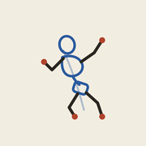

Codo
Gira con el aro del lienzo o con los deslizadores.
Objeto
Fotogramas por segundo
Cada plano tiene su reparto, escenario y cámara. Posa en un fotograma y se guarda una clave (◆) del personaje; activa la grabación de cámara para animar el encuadre. En Diálogo, escribe lo que dice cada personaje: mueve la boca y sale como subtítulo. Arrastra rombos y líneas para cambiarlos de tiempo.
Quién habla

Arrastra los puntos ● para mover manos y pies, el ● para mover el cuerpo · toca una pieza o un punto para girarla